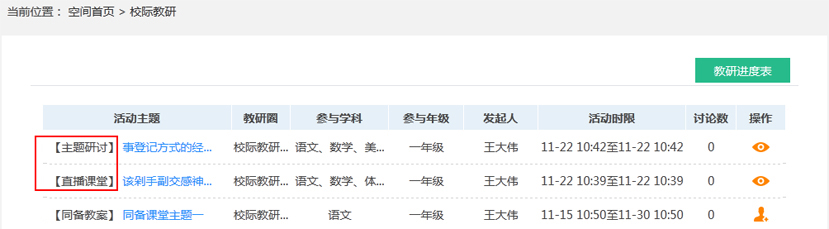
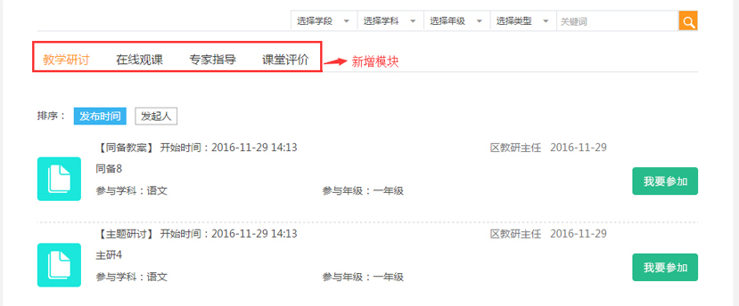
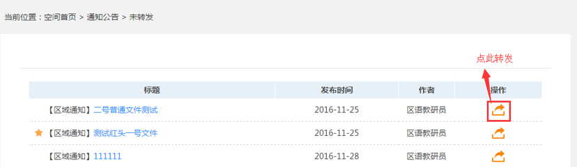
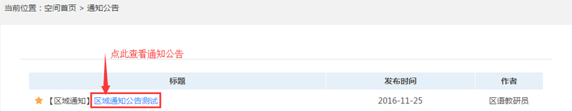

更新说明：
- 2016年12月1日
- #故障修复和细节体验优化，页面风格改版，界面更加美观；
- #新增功能，更好的服务于教师和学校常态工作；
·校际教研
新增“直播课堂”和“视频研讨”功能：
备课组长、学科组长和年级组长可以在校际教研圈内发起视频研讨或直播课堂，自主选择教研圈和参与范围等；

发起校际教研活动
教师可以参与和查看在参与范围内的校际教研，进行互动交流；
教师参与和查看校际教研
教师点击“活动主题”名称或操作列的“参与”、“查看”按钮参与及查看校际教研页面。
·区域教研
增加教学研讨、在线观课、专家指导、课堂评价模块
通过点击“区域教研”图标进入区域教研页面，点击“我要参加”或“进入查看”按钮参与。
(1)教学研讨
活动进行中：点击 ，即可参与同备教案的修改；（支持多次修改，系统在修改教案列表中保留最新的修改教案）
，即可参与同备教案的修改；（支持多次修改，系统在修改教案列表中保留最新的修改教案）
活动已结束：点击可查看讨论列表并进行评论。
(2)在线观课
活动进行中：点击，即可在线观看教学视频，并参与互动讨论。
活动已结束：点击可查看讨论列表并进行评论。
(3)专家指导
活动进行中：点击，即可参加专家实时直播和视频研讨，并参与互动讨论。
活动已结束：点击，即可查看已经结束的直播课程，并进行评论。
(4)课堂评价
活动进行中：点击，即可参与课程的在线评价活动，按照评课标准参与打分和评论。
活动已结束：点击，即可查看课堂的评分结果，并进行综合评价（不计分）。
·通知公告
可以转发和查看教研人员下发的通知公告
校长和副校长可在“通知公告” 处查看区域教研人员下发的通知公告，并且可以通过转发功能方便学校其他用户查看；
校长转发通知公告
校长转发后，其他用户可在学校首页和个人空间的“通知公告”处进行查看。
教师查看通知公告